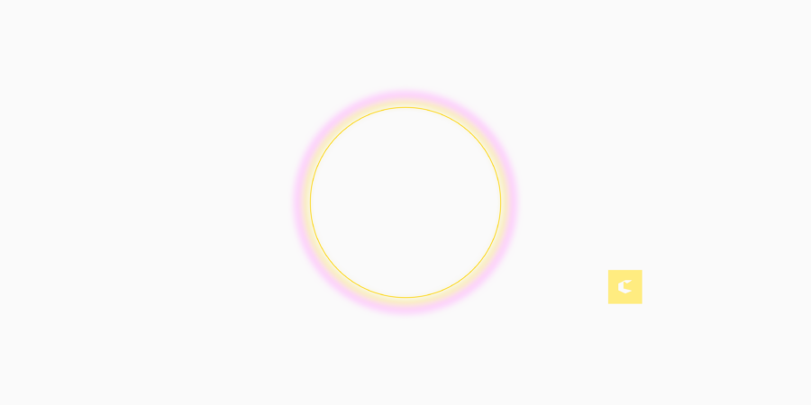

Out of Office Co-working Event with the CGDC
Come be OOO with us for a co-working session at Two-Thirty.
Need a change of scenery from your home office or the usual coffee shop rotation? Bring your laptop and work alongside designers at Two-Thirty, a versatile work club and co-working Space. No agenda, no presentations—just a space to focus, connect, and break up the isolation of remote work.
What to expect
Whether you’re heads-down on a project or looking to bounce ideas off peers, work alongside the energy of others, and have casual conversations that spark new thinking, and access to the collective expertise in the room. Have a meeting? Call boxes are available so you won’t be disturbed.
The session runs from 10am – 2pm. Bring your lunch, bring a snack. This is a free event, but space is limited so registration is required to attend.
The Two-Thirty Co-working space can be found at 230 W. Superior St on the 3rd floor.
Special thanks thank you to Nicolette Stouser-Bassett for organizing and to Two-Thirty for offering their space.